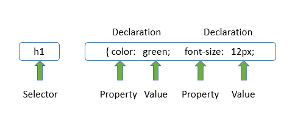

Når vi snakker CSS, snakker vi udseende og hvorvidt HTML-siden skal styles.
CSS-koden ligger op af HTML-koden, men styrer ikke hvad der står, men hvordan det modtages af læseren.
Et eksempel på en CSS-kode kunne være:
Her kan vi se, at der er tale om en overskrift – dette er indikeret med en selector ”h1” efterfulgt af ”{” som betyder ’start/åben’.
Hernæst kan vi se nogle properties ”color” (en farve) – efterfulgt af en value ”green”, hvorefter den del af koden bliver ’lukket’ med ”;” - derefter tilføjes der en property mere, som fortæller om størrelsen på overskiften ”font-size”, som så har fået en value på ”12px”.
Man lukker naturligvis altid sin selector kode med ”}”, hvorefter man så kan begynde på en ny selector.
Det skal pointeres, at dette blot er 2 ud af mange properties og values, man kan give en selector.
Visse regler er gældende, når det kommer til vigtigheden af et tag eller en kode.
Det handler her kortsagt om at være så specifik som muligt. Hvis man blot benytter sig af simple element selectors som ”p” eller ”h1”, har man ikke meget kontrol over dem. Har man derimod klassificeret dem med en ”class” eller givet dem deres eget ’ID’ – kan man nu have fuld kontrol over, hvilken (eksempelvis) paragraph eller overskrift, som skal gøre hvad.
Kilde: Niels Østergaard